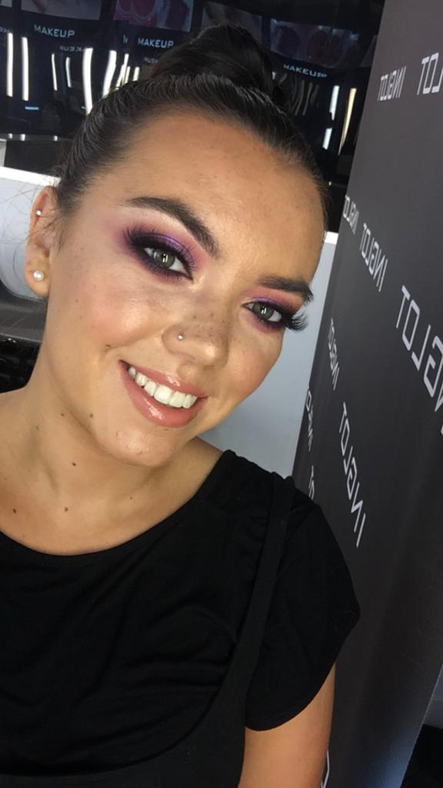

Ellie's Makeup Corner
My name is Ellie Feighery. I am a qualified Beauty Therapist in Aesthetic treatments and Makeup Artist. I have been working on counter and freelancing as a makeup artist for almost 3 years.
I worked for Inglot in the Inglot Pro Store where I was a makeup artist and completed the roles of Product Specialist and In-Store Trainer. I received Inglot training in makeup artistry while completing my college qualification. I have also worked for the company Estee Lauder under the brand Bobbi Brown where I trained in brows and worked as an on-counter Brow Artist.
I also completed brand training and Brow Artist training in the London Bobbi Brown Academy. I was involved in many in-house courses for Inglot in the aforementioned Inglot Pro Store and became passionate about teaching. I also have taught many masterclasses to colleges and the general public. I have also conducted masterclasses for VIP Magazine for new product launches. I have always had a passion for makeup, and really enjoy making people feel good or teaching them a new trick to add to their routines.
Here is a video I appeared for Inglot's Facebook Page:
My appearance in Karen Bachini's video: